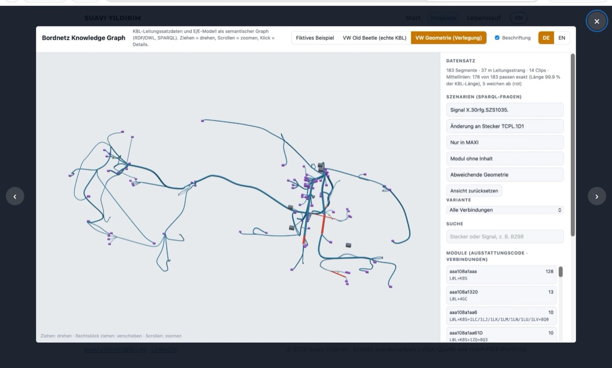

← All projects

Wire Harness Knowledge Graph
FAU – Institute FAPS | 10/2026 | Developer (graduate research assistant)
Real VW harness as a knowledge graph, live 3D demo

What?
- KBL (VDA 4964) describes the harness: connectors, wires, modules. The E/E model holds functions and control units. Both share only names.
- Goal: link both in one semantic graph and answer questions neither source answers alone.
- Built to understand the KBL data formats in depth, from XML to 3D geometry.
How?
- Ontology (OWL, 12 classes, German and English labels) and a Python converter (rdflib).
- SPARQL questions on traceability, change impact and variants: first a fictitious door harness, then the public VW “Old Beetle” (KBL 2.4).
- 3D routing from the KBL B-spline centre lines; interactive viewer (Three.js).
Results
- 5 957 triples; MAXI and MINI variants compared: 254 and 165 connections.
- Consistency checks found an empty module and 5 segments whose geometry does not match the topology.
- Live demo: suavi-yildirim.github.io/bordnetz-knowledge-graph